Welcome
Hello, we are Jonathan and Raquel Worden. We both strive to serve the Lord. Jonathan currently works as a Sales Manager for the Hilton Memphis and I am an Administrative Assistant for a commercial real estate agent here in Mississippi where we live. We are so grateful that you have given us your time to get to know our story. We cannot fully comprehend what it is that you are dealing with, all of the difficult thoughts and hard questions to answer. We can’t even start to understand the amount of strength it takes to even be open to a decision like this and we thank God for your love for your sweet baby and your courage. If there is one thing we know its that no matter the challenge, no matter the sorrow- God is still good and He sees you. He sees your hurt, He sees your pain, and He knows every detail of who you are and who your baby is. We hope you will take the time to read on and know just how much we understand this heartache. We want to give you the space to process all of the complexities that you are dealing with right now and we pray that we have a chance to meet you, but until then, we hope this profile allows you to meet us a little.
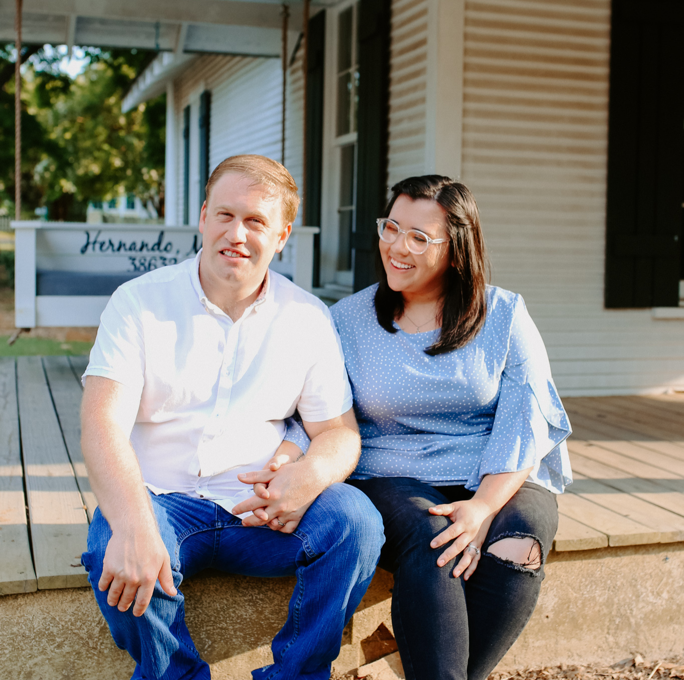
Our Story
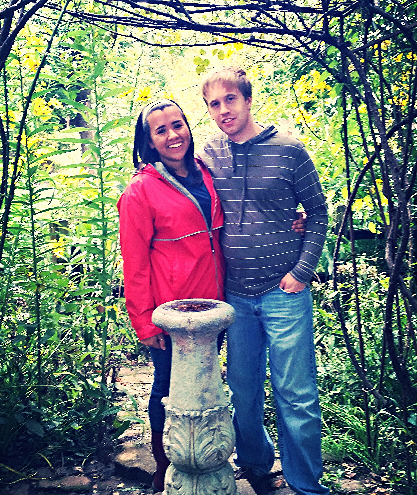
 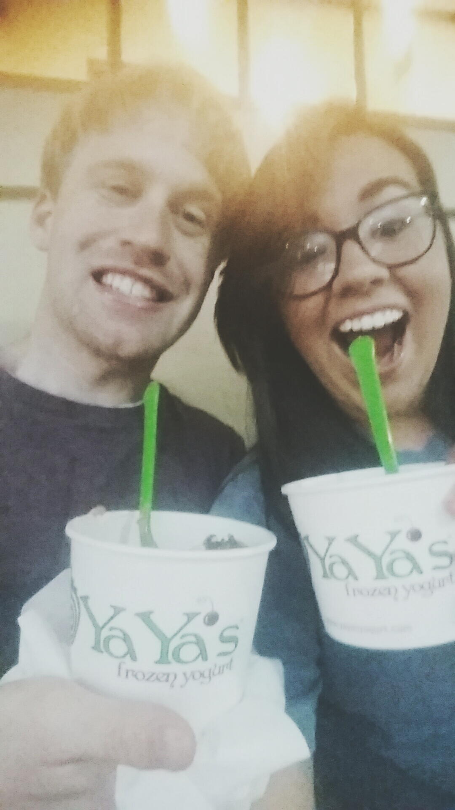
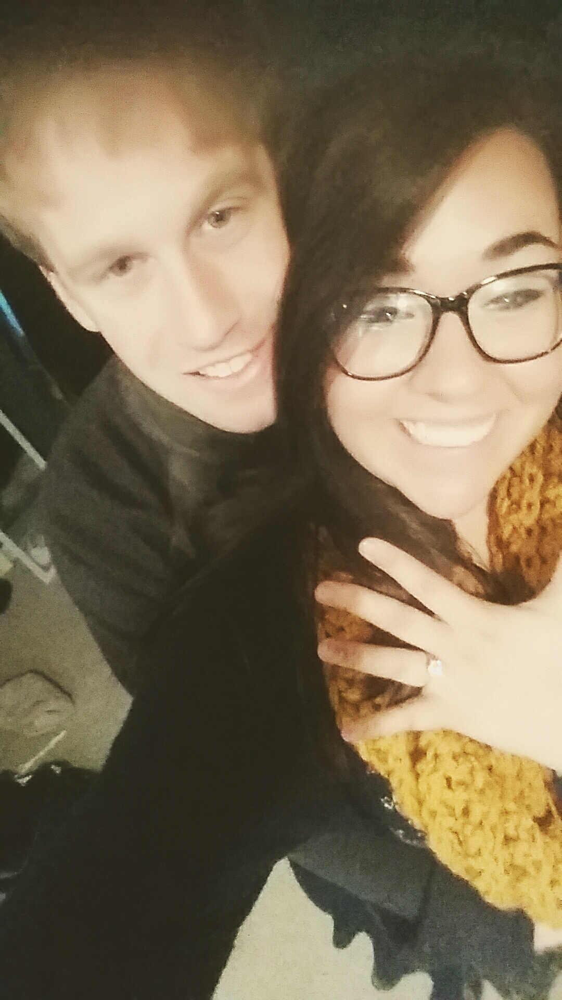
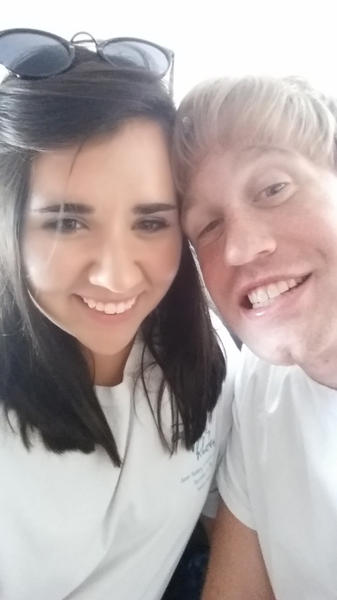
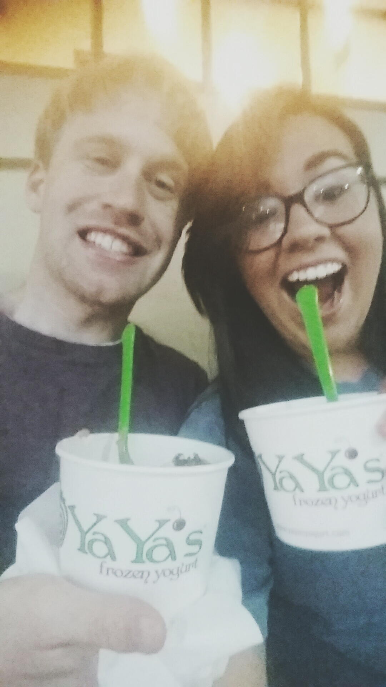
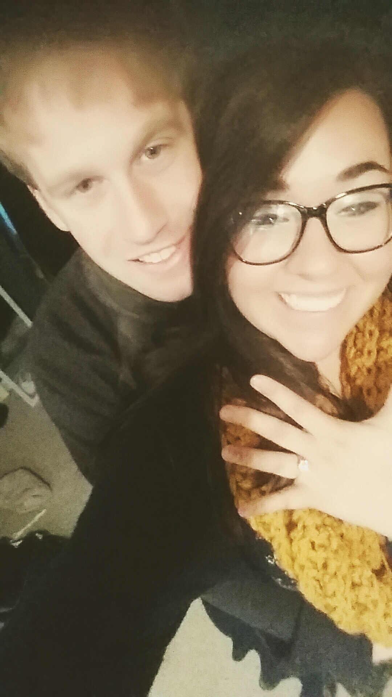
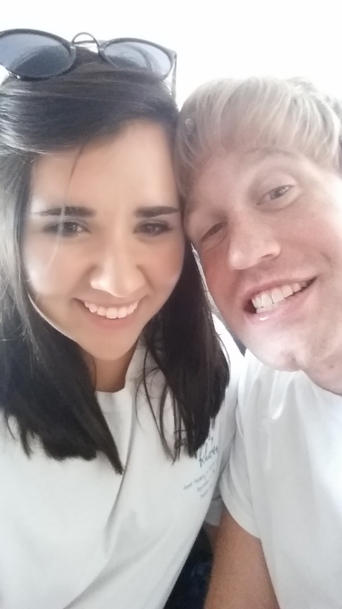
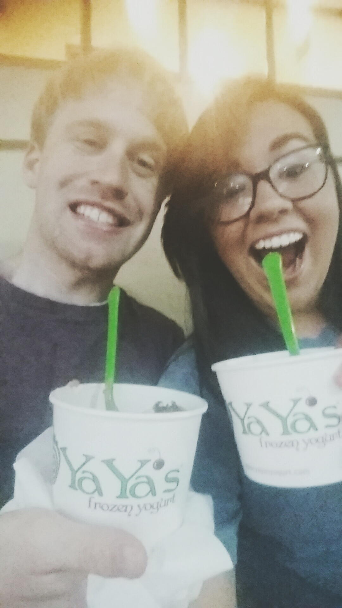
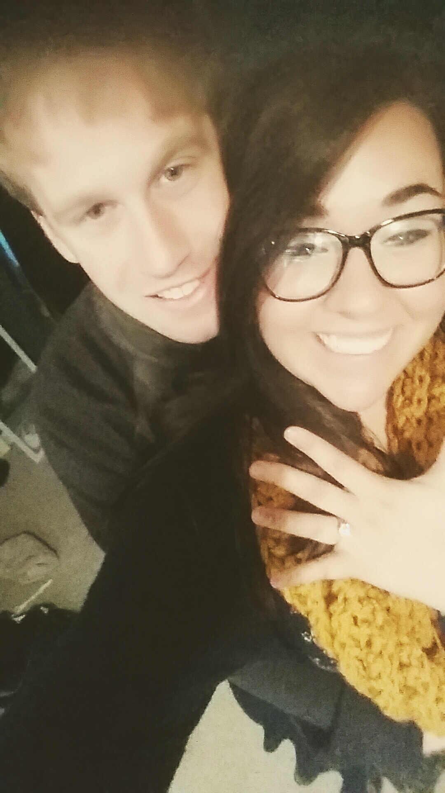
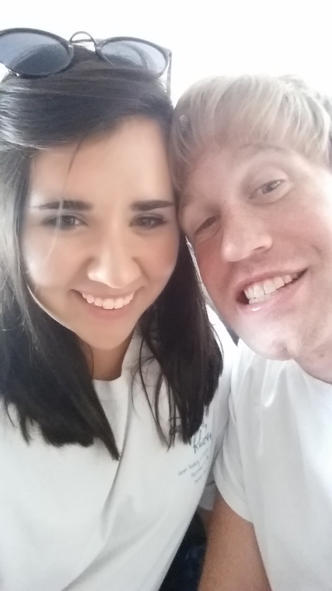
Love at first sight always seemed like a cliche in my eyes. I had a troubled past with a lot of poor attempts at love and experienced some abuse. I felt like used goods in a lot of ways and really just wanted to grow in my walk with the Lord, the One that wouldn’t hurt me and was always there for me. The Lord gave me wonderful friends that became like family to me at my church. He used the worship ministry to help me have a way to express all that hurt even when I didn’t have the words. A dear friend of mine named Ashton was one of those in the worship ministry and he felt God leading him to be a worship pastor in South Dakota. With my beet red face and sobs, I went to Ashton’s house, gave him a few gifts and a hug and told him I was glad for him. Then I got in my little yellow bug and drove away. Little did I know, that was the first time Jonathan saw me.
A few days later I got a friend request from a mutual friend that knew Ashton. Then that following Sunday, that same face came walking up the stage. He told me his name was Jonathan and he asked me if I’d like to sit with him during service. I said yes and afterwards I waited around wondering if he was going to talk to me about something but he did not and that was that. We said our goodbyes and went on our way. I had been frustrated that morning with something and was praying on the way home and the Lord kept bringing that blonde haired boy to my mind. So I said, “Okay Lord, I will message him.” I thought maybe he had a sick family member and needed prayer so I sent him a message. About an hour later I found myself on a date.
We went to the park with some of his friends and had a somewhat weird beginning to the date. Knowing that it probably wasn’t going well he asked me for ice cream - the true way to my heart! We didn’t leave that second slot in the Sonic drive thru until six hours later. We laughed and joked and I took my shoes off and can you believe I didn’t even finish my milkshake (well, I did on the way home). To my surprise, he was kind and excited to get to know me. As he walked me back to my car I told him maybe we should do this again. He then looked me right in the eyes and said, “Well yes, because I am going to marry you someday.”
So my little plan of no more boys had quite the wrench thrown in it. We started to court one another officially in April of 2014. With a six year difference, our age gap led to a few concerns and challenges for us. But we just kept growing together and did our best to allow God to bind our relationship. In 2016 on my first Thanksgiving college break, he knelt down in front of all of our parents in my parents living room. By March of 2018, we were married and we have continued to grow together ever since - that same hesitant girl and that same starry eyed boy.
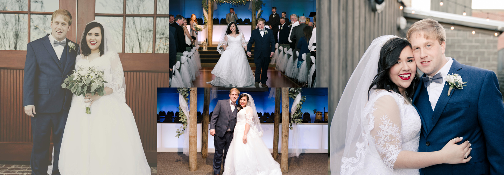Not long after we were married our concerns of infertility were confirmed. I never had the average womanly systems and knew we might have problems but we both knew adoption would be an exciting adventure and were ready to travel whatever road God had for us. Even still, we could not have been prepared for what was to come. The doctors weren’t sure what was wrong in the beginning and it led to numerous visits and procedures and they finally found that I had some abnormal anatomy, endometriosis, and severe PCOS. We were told we would have to undergo ten major surgeries to even get to a healthy point. So we prayed, saved up, and prepared to undergo the first. Can you believe that they were able to correct the major issues in ONE SURGERY! We couldn’t believe we were done with that part but then we had to move directly into fertility treatments since my anatomy would be in the best state right after the surgery. It was quite the whirlwind. Here we are barely married a year and already having to undergo multiple treatments.
They all failed and through the clouds of all that grief we had clarity about one thing - this was just a chapter and adoption is more and more our exciting hope. Then they told us we only had one more chance through IVF which would cost a lot of money, may not work, and there is a high probability that I myself could not survive a pregnancy not to mention a low chance that a baby could survive. So we knew. God had placed adoption on our hearts from the beginning and now we knew. We then took time to mourn the loss of my womb and draw near to one another through the grief. We strove to give one another time to grieve as we still do today. It is hard to encapsulate all of the sorrow these four almost five years have had. The pain of feeling alone, the sting of being alienated by well-intentioned people who just don’t know how to handle the messiness. The difficulty of trying to be joyful for others who are moving on with their lives.
But please know this, through all of those heartaches came strength, unity, togetherness and came humility. We have both been challenged to let go of destructive traits that we wouldn’t have seen if the Lord hadn’t led us through infertility. He continues to grow us and comfort us and give us a hope that parents or not parents, He has a plan for our lives and He is a good, good Father. And now here we are talking to you. We have prayed for this opportunity for so long and we are so grateful for the ways in which the Lord has patiently prepared us for this chapter. We still have so much to learn and are so thankful you’ve taken the time to get to know us as we know so very deeply how precious life is.
Our Home and Hometown
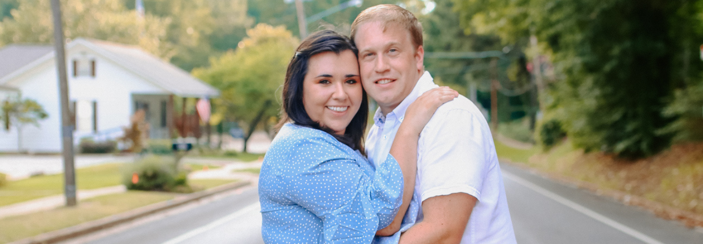As of today we call the sweet little town of Hernando our home. We worshiped, met, married, bought our first and second home, and hope to become parents here. Our little town has a lot of community events including a great farmer’s market, annual festivals, parades, and more. But one of our favorite things about our town is that it is home to our church, Community Point. We felt the Lord leading us to join our Pastor, Brian Hood, in planting this small church after serving at Longview Point for over a decade. At the start of 2022, we officially launched this precious church. Our mission is to be rooted in the Word and reaching the world. We have a heart for seeing people from all walks, ethnicities, backgrounds, and handicaps come to know the Lord and be welcomed in a church family who cares more about someone's heart for the Lord than what the world says is ‘wrong’ with them. We are so honored to be part of such a sweet community and adore the church family God has given us.
A normal day in our home is quiet mornings with coffee and time in the Word. I love to take our dogs on a walk every morning and have to have breakfast. Jonathan teases me for waking up hungry and hustles off to work so he can come back home on time. On the weekends I tend to bake cakes and make dinners for us to enjoy. We love spending time with our friends and have a whole cabinet of card games that we have shared many laughs over. In the evening we enjoy taking golf cart rides and any other time we sit out on our porch and watch movies and listen to the neighborhood kids ride their bikes and jump on trampolines.
But the biggest part of our home is our snuggly doggies. Toby is our older basset-schnauzer mix. My parents rescued him the day he was to be put down so I could have a dog to take to college. Sweet Toby was abused as a puppy which made him skiddish and defensive and from the start we were kindred spirits. Toby was made to be my doggo. He loves sleeping in and taking naps but also loves to play and take care of his sister, Ellie. Ellie is our little dorky (dauchshund-yorkie mix) and has more attitude than you could imagine. She doesn’t like other dogs stealing her snuggles with her daddy and loves to keep our yard free of squirrels and birds. El-Belle has epilepsy and Toby has taken the role of her protector. Any time she is stressed he will snuggle with her and if a seizure starts, he will pick her up and bring her to mama. And Ellie, she can’t live without her bubs. She is his little sidekick. Both of our doggos love going to see Jack, Roxie, and Beau (mom’s dogs), taking long walks with mama, enjoying naps with daddy, and taking golf cart rides. They love having kids come visit because they don’t run out of playtime energy as fast as we do and they will run around the back yard for more than thirty minutes at a time! We can’t wait to see all the doggie snuggles and play times to come!
Friends and Family
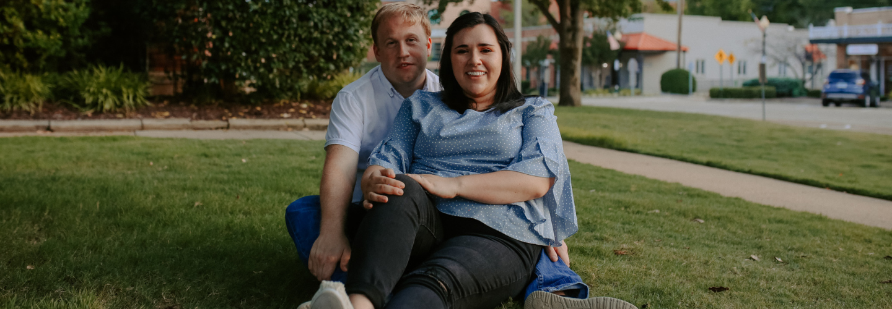To say that any child that comes into our home would be loved would be an understatement. We will likely have to fight the grandparents off at the door!! I am so grateful to tell you that if you do agree to allow us to love that sweet baby, that baby will be incredibly loved by six wonderful grandparents and too many aunts, uncles, and cousins to count. As far as my family, I have two kind, generous parents who have been together my whole life and have equipped me with so many practical life skills as well as a strong sense of honor and love for family. My parents are always there for us and would drop anything to be there for any of their kids. My dad is looking forward to taking little ones on the boat with him to go fishing and watching Star Trek and Rifleman in the chair together. My mom is excited for baby snuggles and cooking with little ones as well as helping them to break the rules every now and then. I have four brothers who I love very dearly. Three of my brothers are half by blood but whole by love - Eddie, Ryan, and Kevin. They all have their own children and very strong women in their lives who I like more than them sometimes! Then the fourth brother, Christopher, well, he is my Bubba. He is my Bubba who has teased me and shared video games with me and looked after me my whole life. I look forward to seeing them all love and teach the children the Lord chooses to bring to us. I also have numerous aunts and uncles who I cherish - The whole Shettles family, my Texas family, Uncle Jimbo. Oh namely two wonderful cousins along with their families, Jay and Eric. Jay is my mom’s nephew and Eric is my dad’s and they have been like brothers to me. I love them both and hope they can continue to teach me how to be as strong as they are.
Jonathan’s family is a bit more blended. First he has Mrs. Ann which is his mama and then Mrs. Anita, his bonus mama. Both have such sweet spirits. They are always there when you need to vent or get good advice and have loved me so well from the very beginning. I tell them to you first because they have helped me see that to love someone does not mean that you take love from someone else. With Jonathan, they both loved him and neither felt as though the other was trying to take the other’s place. They found harmony in the midst of heartache and I am so grateful for the example they are for me as I hope to join you in mothering that sweet baby. I know it isn’t always easy but I also have living proof that it can happen and happen well.
Then he has his dad, Mr. John, and his bonus dad, Mr. Ronne. Mr. John is a beach-loving, cleaning, loud Chicago native who has such a tender spirit. He loves to spend time with his family and has always been such a student. He always looks for ways to learn from someone, a quality that I hope he can teach me and our children. Then there is Mr. Ronne who is our Mr-Fix-It. You name it, car, broken light, dryer, or sadness, he is there to fix it. He has a knack for horses and loves golf cart rides and big trucks. Oh and that talk-to-a-wall quality that J-Money has - yeah that is all from his dads. Both of them can find a friend in anyone they meet and challenge us to never judge someone based on the way they look. Jonathan also has bonus siblings who he loves and who are excited to become aunts and uncles as well as his own aunts and uncles who are also constantly cheering us on. Oh and last but certainly not least there is Grandma Sue. She is our feisty, tattooed grandma who is mother to Mrs. Anita but Grandma to all. She has held each baby that has come into the family and I pray she can continue to do so in our home. I didn’t have much time with my grandparents growing up before they left this earth and prayed specifically for our children to be surrounded by family and boy, did He come through!
Then we have our friends who are just as much a staple in our lives. Our lives are filled with precious memories of all of our friends. With all the hard times we’ve been through they have been there with us - they’ve prayed and wept, laughed and cried, just lived life with us. Most of our friends believe in the Gospel and walk with the Lord. Those who do believe live life like it too. They have taught us so much about becoming parents and navigating marriage. And our other friends help to push us to see other lifestyles and know it's okay to get messy with one another as long as there is love there. Our friends are always open for honest, real-life conversations and are there for us no matter what. We cherish each and every one of them and hold them close. There is no question that they are our chosen family. We hope to join them in the next stage of life someday and are so grateful for their consistency and encouragement on a daily basis.
We have been friends with Jonathan and Raquel for a little less than a year, and we have both been hugely blessed by their friendship in this short time. We can both honestly say that this is one of the most servant-hearted couples we have ever met. We have seen them sacrifice and give for their friends over and over again from running to the store for us at 10:30 at night, providing delicious meals, opening up their home often, caring for our 4 month old daughter, offering their help whenever we have a need, helping us adjust to living in a new area, and in many, many other little and big ways. They would be the first people we could call to take care of our daughter if something came up. If they’re so willing to sacrifice and love their friends, we can’t even begin to imagine how much more they will do that for their own child some day. Their loyalty, generosity, faith, and servant-heartedness bless so many people already and will certainly bless any child that has the privilege of having them as parents. - Marlin and Bethany Towery
My name is Hunter Wooldridge, I am the Minister of Youth and Music at Cumberland Baptist Church in Maben, MS. I have known Jonathan and Raquel most of my life. Jonathan became a big part of my life when he initiated a friendship with my family’s exchange student, Anthony, from Hong Kong. Jonathan, along with others in our youth group, helped Anthony feel accepted and loved in a place that was entirely unfamiliar to my foreign brother. Raquel always treated me like her little brother. She looked out for me both at church and at school. I am the oldest of three so it was cool to have such an awesome “older sister”. When this couple got married they continued to pour into my life. They made mistakes, but were always that first to admit to them. But they never let these mistakes stop them from doing what God put them on earth to do. I would not be the same minister, not even the same person if it was not for Jonathan and Raquel. I am forever thankful for them and excited to see them become parents. I rest assured that this child, yet not known to us, is already loved and being prayed for by R&J. I know that this is God’s plan to bless this child with the most caring and selfless parents. - Hunter Wooldridge
Fun Facts
| About J-Money | About Raquel |
|---|---|
| Has no idea where J-Money came from | Is the creator and copywriter of the title J-Money |
| Cuts Grass and Washes Cars for Fun | Loves to Bake and reads cookbooks for fun |
| Eats Anything Spicy and loves root beer | Loves to play flute and especially in worship |
| Has no idea where J-Money came from | Is the more superior Ole Miss Rebel |
| Is a Memphis Tiger | Poop/Fart jokes are her favorite |
| LOVES to travel | Is happiest if she is home with her dogs |
| Would own a truck, Suburban, boat and basically anything with a key | Has anything from Lil’ Wayne to George Strait to Shane and Shane on her playlist |
| Loves 80’s rock, Duran Duran, and pretty much any music before 2000 | Loves being part of the special needs ministryy |
| Gets excited to save money and go to Aldis | Knows all the words to most if not all songs on her playlist |
| Has watched all of the Forensic and Cold Case Files | Loves going on walks especially with the dogs and friends |
| Finds all of our friends the best deals cars or houses and looks at realtor.com for fun | Listens to worship music most of the time and likes it best when she can crank it |
| Loves funny Youtube videos | Enjoys movies especially on Sundays under the blanket with a puzzle |
| Favorite outfit is pj’s and house shoes | Loves to drink coffee, read good books, crochet, and paint watercolors in spare time |
One Last Thing
We want to first thank you for taking the time to read about us - you truly honor us in this way. Our struggle has been long but we have seen the Lord work through it all. And since our adoption journey, we have had so many help us to answer questions and put together this message to you. But you might not have so much help. You might be walking through this and hurting and it may be difficult to read through each profile after the other trying to make such a hard decision. But please know this, you are not alone. You are loved and you are prayed for daily. We may not know your name but we have earnestly sought the Lord’s favor on your behalf. We first hope you will entrust others to help you with this decision - friends and family can be so crucial in difficult seasons. Secondly, we hope you will take the time to reach out to us, we want to honor your story in getting to know you better. Whether over a cup of coffee or just a phone call, we would love to hear your sweet voice and know how better to pray for you. We hope to start this journey with you and we know that no matter the outcome, it was no accident that you read our profile. We hope you have seen the love that is in our hearts and our home and if you have any questions at all, please reach out to us.